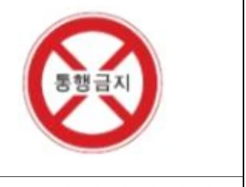

891. Which of the following is the correct interpretation of this safety sign?

- ①Pedestrians are allowed to pass.
- ②Vehicles and horses as well as pedestrians are not allowed to pass.
- ③The sign should be installed in the center or to the left of a road.
- ④A period for no passing cannot be indicated on the sign.
Show answer
Answer
② Vehicles and horses as well as pedestrians are not allowed to pass.
Reference
According to Appendix 6 of the Enforcement Rules of the Road Traffic Act, regulation sign 201, and a no-traffic sign, not only pedestrians but also all cars and horses are prohibited from passing. It is possible to install on the center or right side of the road in a section or location of the road, and attach and install an auxiliary sign specifying the section, period and reason for no traffic.
Reference text is a machine translation for study.